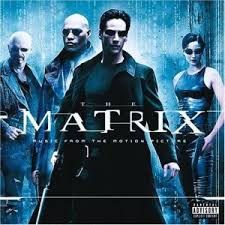

The Matrix is a groundbreaking science-fiction action film released in 1999. It was written and directed by Lana Wachowski and Lilly Wachowski. The movie stars Keanu Reeves, Laurence Fishburne, and Carrie‑Anne Moss.
The story follows Thomas Anderson, a computer programmer and hacker known online as Neo. Neo begins to suspect that the world he lives in is not real. He is contacted by a mysterious rebel leader named Morpheus, who reveals the truth: humanity is trapped inside a simulated reality called the Matrix. In reality, intelligent machines have taken over the world and use humans as an energy source while keeping their minds inside this artificial simulation.
Neo joins a group of rebels who fight against the machines and their powerful agents inside the Matrix. As the story unfolds, Neo discovers his potential role as “The One,” a person who may have the power to free humanity.
The Matrix was both a critical and commercial success. It won four Academy Awards at the 72nd Academy Awards for technical achievements including visual effects and film editing. The movie later expanded into a franchise with sequels such as The Matrix Reloaded, The Matrix Revolutions, and The Matrix Resurrections. Today, The Matrix is considered one of the most influential science-fiction films ever made and continues to shape modern action and sci-fi storytelling.